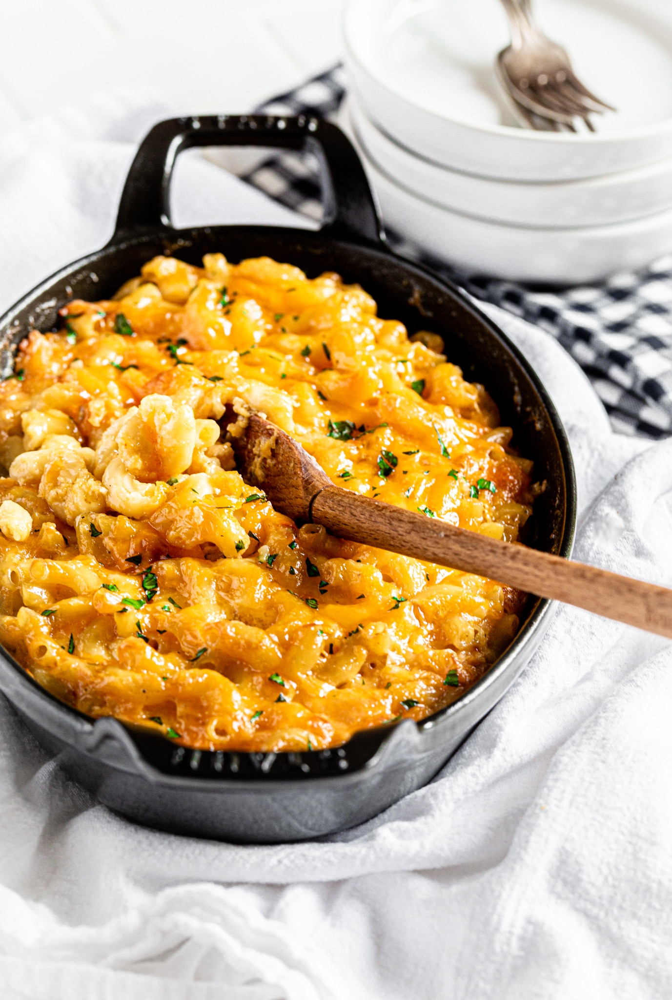

Baked Mac n' Cheese

Baked Mac n' Cheese
This dish is a classic! No matter if you are an adult or child, everyone loves mac n'cheese! I mean who doesn't love creamy noodles covered in layers of cheese?!
How to Make Baked Mac n' Cheese:
- Boil the pasta, drain.
- Make the cheese sauce by combining a fat (butter), and starch (flour), then whisking in the milk products.
- Cook the sauce until it’s nice and thick.
- Add in shredded cheeses, stir well.
- Combine cheese sauce with cooked pasta.
- Transfer half of the mac and cheese to a baking dish, sprinkle with more shredded cheese.
- Top with the rest of the mac and cheese, top with more shredded cheese.
- Bake and prepare to thoroughly enjoy!
Ingredients:
- 1 pound dried elbow pasta
- 1/2 cup unsalted butter
- 1/2 cup all purpose flour
- 1 1/2 cups whole milk
- 2 1/2 cups half and half
- 4 cups shredded medium sharp cheddar cheese, divided (measured after shredding)
- 2 cups shredded Gruyere cheese, divided (measured after shredding)
- 1/2 tablespoon salt
- 1/2 teaspoon black pepper
- 1/4 teaspoon paprika
Step-by-Step Guide
- Preheat oven to 325 degrees F and grease a 3 qt baking dish (9x13"). Set aside.
- Bring a large pot of salted water to a boil. When boiling, add dried pasta and cook 1 minute less than the package directs for al dente. Drain and drizzle with a little bit of olive oil to keep from sticking.
- While water is coming up to a boil, shred cheeses and toss together to mix, then divide into three piles. Approximately 3 cups for the sauce, 1 1/2 cups for the inner layer, and 1 1/2 cups for the topping.
- Melt butter in a large saucepan over MED heat. Sprinkle in flour and whisk to combine. Mixture will look like very wet sand. Cook for approximately 1 minute, whisking often. Slowly pour in about 2 cups or so of the milk/half and half, while whisking constantly, until smooth. Slowly pour in the remaining milk/half and half, while whisking constantly, until combined and smooth.
- Continue to heat over MED heat, whisking very often, until thickened to a very thick consistency. It should almost be the consistency of a semi thinned out condensed soup.
- Remove from the heat and stir in spices and 1 1/2 cups of the cheeses, stirring to melt and combine. Stir in another 1 1/2 cups of cheese, and stir until completely melted and smooth.
- In a large mixing bowl, combine drained pasta with cheese sauce, stirring to combine fully. Pour half of the pasta mixture into the prepared baking dish. Top with 1 1/2 cups of shredded cheeses, then top that with the remaining pasta mixture.
- Sprinkle the top with the last 1 1/2 cups of cheese and bake for 15 minutes, until cheesy is bubbly and lightly golden brown.